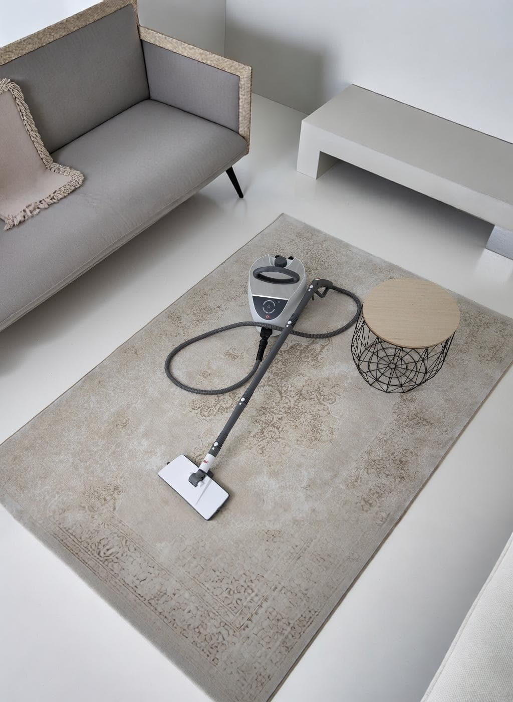

Igiene profonda, zero fatica.
La tua casa è già pulita. Noi ti aiutiamo a mantenerla sana e sicura dimezzando i tempi di lavoro e senza usare prodotti chimici.

Igiene profonda e certificata per la tua famiglia.
Sappiamo che il tuo standard di pulizia è già altissimo. Il nostro obiettivo è farti ottenere lo stesso risultato faticando la metà. Acari, allergeni e batteri si annidano in materassi, tappeti e divani, resistendo alle pulizie tradizionali. Offriamo le eccellenze Lux: filtrazione HEPA di livello clinico e la forza naturale del vapore ad alta temperatura per igienizzare ogni superficie senza l'uso di detergenti chimici.
-
Sanificazione Anti-Acaro
Sistemi battitappeto e battimaterasso progettati per estrarre in profondità acari e pelle morta, garantendo un sonno sano e senza allergie.
-
Forza Termica Naturale
Il vapore secco ad alta temperatura scioglie lo sporco e igienizza pavimenti, fughe e sanitari eliminando il 99% dei batteri senza chimica.
-
Ergonomia e Leggerezza
Strumenti bilanciati e leggeri, pensati per non affaticare la schiena e dimezzare i tempi dedicati alle pulizie domestiche.
Mettici alla prova sul tuo divano.
Richiedi una dimostrazione pratica gratuita a casa tua. Vedrai la differenza con i tuoi occhi.
Richiedi Prova GratuitaIl Metodo Orizzonte: Igiene Dimostrabile
Non ti chiediamo di fidarti delle promesse. Costruiamo la soluzione intorno alle tue reali esigenze in 3 semplici passi, direttamente a casa tua.
Analisi dei Tessuti
Valutiamo insieme lo stato di igiene profonda dei tessuti. Tramite strumenti di precisione, misuriamo oggettivamente la presenza di micro-polveri e allergeni che, per loro natura, sfuggono alle normali e quotidiane pulizie domestiche.
Prova sul Campo
Mettiamo in funzione i sistemi Lux davanti ai tuoi occhi. Vedrai la potenza di estrazione a secco e l'efficacia sgrassante del vapore ad alta temperatura, senza usare una singola goccia di chimica.
Assistenza Dedicata
Se decidi di affidarti a noi, il rapporto non finisce con la consegna. Ti garantiamo un'assistenza tecnica continuativa e la fornitura puntuale di tutti i ricambi e filtri originali nel tempo.
Domande Frequenti sulla Sanificazione
Il vapore uccide davvero gli acari del materasso?
Sì, il vapore secco erogato ad alta temperatura (sopra i 160°C) elimina istantaneamente acari, batteri e uova. Tuttavia, per una sanificazione completa, è fondamentale abbinare al vapore un sistema di aspirazione profonda (battimaterasso) per estrarre i residui organici dalle fibre.
I rimedi casalinghi come il bicarbonato funzionano contro gli acari?
Il bicarbonato può assorbire l'umidità superficiale, ma non penetra nelle fibre dove si annidano gli acari. Solo un sistema di estrazione e battitura professionale garantisce l'eliminazione profonda degli allergeni, tutelando chi soffre di asma o allergie.
La sanificazione a vapore rovina i tessuti del divano?
Assolutamente no. I nostri sistemi professionali utilizzano "vapore secco", che contiene una percentuale minima di micro-gocce d'acqua. Questo permette di igienizzare in profondità i tessuti senza inzupparli, lasciando il divano o il materasso asciutto e pronto all'uso in pochissimo tempo.